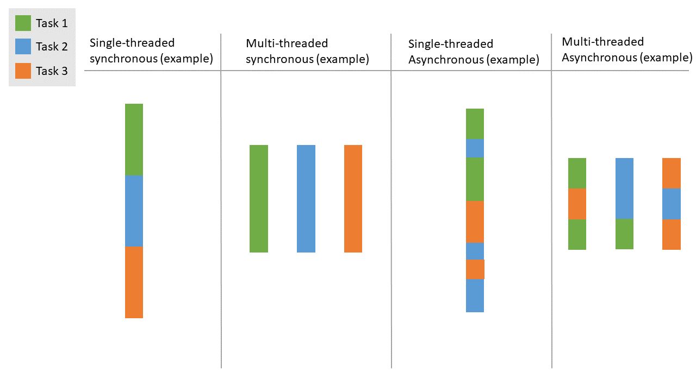

참고자료

비동기
실생활 예
- 나 혼자 방 청소와, 빨래를 한다고 생각해보자.
비동기적 접근방법은 방청소 10% 만 해놓고 빨래 10% 하러가고 다시 와서 방청소 20 % 하고
동기적으로 생각하자면 방 청소 100% 완료 후 빨래를 할 것이다.
설명
1: ThreadPoolTaskExecutor defaultTaskExecutor = new ThreadPoolTaskExecutor();
2: defaultTaskExecutor.setCorePoolSize(10);
3: defaultTaskExecutor.setMaxPoolSize(20);
4: defaultTaskExecutor.setKeepAliveSeconds(3);- 원래라면 코드는 1→2→3→4 번 순으로 진행될 것이다
- 하지만 비동기에서는 코드기 1→4→3→2 순으로 진행 될 수 있다
- 해당 코드의 진행 속도나 이런것에 따라 비동기 라이브러리가 적절하게 작업을 분리한다
중요점
- 비동기는 단순히 실행 순서가 보장되어있지 못하는 것이다
- 제일 오해하면 안되는 것이 순서가 보장되어있지 않기 때문에
자칫하면 코드가 동시에 실행된다고 오해하는 것이다
- 제일 오해하면 안되는 것이 순서가 보장되어있지 않기 때문에
- 비동기는 작업 속도의 개선을 기대할 수 없다
- 비동기의 목적은 Non-Blocking 이다
- 하나의 오래 걸리는 작업으로 인해 다른 작업들이 실행 되지 못하는 현상을 막고자 하는것이다.
- 단일 쓰레드로 작동하는 JS의 경우
Fetch()와 같은 네트워크 작업 등 에서 발생되는 대기 시간 때문에Event-Callback을 제대로 처리하지 못하거나 하는 불상사를 막는다 - 예를 들어보면, 10개의 작업을 전부 수행 해야만 다음 작업을 수행 할 수 있는 프로그램을 만든다 치자
- 다음 작업에 동작 속도를 개선 한답시고 10개의 작업을 모두 비동기 처리를 한다고 하더라도
비동기는 단순히 실행 순서만 바뀌는 것이기 때문에
최종 작업 속도는 동일하거나 오히려 늦을 수도 있다 (비동기 처리과정에서 오버해드가 발생할 경우)
- 다음 작업에 동작 속도를 개선 한답시고 10개의 작업을 모두 비동기 처리를 한다고 하더라도
- 비동기도 Blocking의 완벽한 무적은 아니다
const ayn = new Promise((r) => { for (let index = 0; index < 100000; index++) { console.log(index); } r(); }) ayn();- 예시로 이런 코드가 있을 때
Promise()로 감싸서 비동기를 유도했지만 - 문제는 for-loop 가 너무 빨리 돌아서 비동기 큐에 해당 for-loop의 작업만 저장되있게 된다
- 그래서 사실상 for-loop 100000번 다 돌때까지 다른 작업이 거의 실행 되지를 못한다
- 사실 근데 예제 자체에
Promise를 반환하는 코드가 없어서 그냥 동기로 실행 되서 그냥 참고만 하자
- 예시로 이런 코드가 있을 때
멀티스레드
실생활 예
- 이번엔 두 사람이 방 청소와, 빨래를 한다고 생각해보자.
1번 사람은 청소를 하고, 2번 사람은 빨래를 하는것이다.
즉 멀티쓰레딩은 그냥 작업자를 2명 투입한다는 느낌인 것이다
설명
1: ThreadPoolTaskExecutor defaultTaskExecutor = new ThreadPoolTaskExecutor();
2: defaultTaskExecutor.setCorePoolSize(10);
3: defaultTaskExecutor.setMaxPoolSize(20);
4: defaultTaskExecutor.setKeepAliveSeconds(3);- 1, 2, 3, 4 번 코드를 각각의 단일 쓰레드로 구성하여 실행한다고 가정
- 그럼 1,2,3,4 번 코드는 각각 독립적으로 동시에 실행을 한다
중요점
- 서로 독립적이여도 되는 작업에서 사용하는것이 좋다
- 멀티쓰레딩 특성상 다른 작업이랑 연개되야하는 경우 처리가 매우 까다롭기 때문
- 자신의 CPU 쓰레드 수를 초과해서 생성하는 경우
초과된 쓰레드는 사실상 비동기로 작동한다- 나의 CPU는 I7-7700K 인데 쓰레드 수가 8개 이다
- 만약 8개를 초과하여 쓰레드를 생성한 경우 CPU 스케줄링(FCFS, SJF, etc…) 에 의해 비동기와 비슷하게 작동하게 된다
컨텍스트 스위칭: n개의 쓰레드 수가 있을때 넘치는 쓰레드에 대해서는 해당 쓰레드를 빠르게 전환하여 처리- 해당 쓰레드가 작업중인경우 잠깐 작업을 중단하고 새 쓰레드 작업 처리하고 이런식임
- 지금은 흔치않지만 단일 쓰레드 CPU에 멀티쓰레딩은 그냥 비동기 처리라 봐도 문제가 없다
동시성 문제 (Concurrency Issues)
경쟁 상태 (Race Condition)
두개 이상의 쓰레드가 동일한 자원에 접근하면서 발생하는 문제
- 변수의 값이 0일 때, 두 스레드가 동시에 그 변수를 읽고 1로 증가시키려고 할때
- 두 쓰레드가 참조되는 값이 0으로 동일해서 2가 아닌 1이 나오는 현상
데드락 (Deadlock)
동기화 문제를 해결하기위해 뮤텍스와 같은걸 도입할때
- 두 개의 쓰레드가 서로 Lock 을 걸었는데
- 둘 다 다른 쓰레드가 오기를 기다리는경우 무한대기 상태에 빠지게되는
동기화 기법
| 종류 | 기능 |
|---|---|
| 임계 영역(critical section) | 공유자원에 대해 오직 한 스레드의 접근만 허용 (한 프로세스에 속한 스레드 간에만 사용 가능) |
| 뮤텍스(metex) | 공유 자원에 대해 오직 한 스레드의 접근만 허용 (서로 다른 프로세스에 속한 스레드 간에도 사용 가능) |
| 이벤트(event) | 사건 발생을 알려 대기 중인 스레드를 깨운다. |
| 세마포어(semaphore) | 한정된 개수의 자원에 여러 스레드가 접근할 때, 자원을 사용할 수 있는 스레드 개수를 제한한다. |
| 대기 가능 타이머(waitable timer) | 정해진 시간이 되면 대기 중인 스레드를 깨운다. |
멀티프로세싱
현재 프로그램을 실행하는 프로세스와 완전히 다른 프로세스를 생성하는것
- 멀티쓰레딩에 경우 메인쓰레드와 동일한 Memory-Map 을 할당받는데
- 멀티프로세싱은 아예 독립적인 Memory-Map 과 시스템 자원을 할당받는다
- 사실상 완전히 병렬로 실행되므로 언어에따라 멀티쓰레딩으로도 멀티코어를 활용하지 못하는 경우 사용하기 좋다
사용할 때
- 복잡한 계산을 하거나, CPU 사용량이 많을 때
- 이게 각각에 프로세스 별로 자원이 제한되있는 경우가 있어서
- 아예 다른 프로세스로 빼버리면 멀티쓰레딩 보다 훨씬 빠를 수 있다
- 무조건 독립적일 때
- 이게 프로세스가 진행중일때는 메모리 참조가 안되므로 프로세스가 다
끝날 경우 IPC로 끌어다 쓰는 느낌으로 가야되서 그렇다
- 이게 프로세스가 진행중일때는 메모리 참조가 안되므로 프로세스가 다
멀티쓰레드 VS 멀티프로세싱
| 특징 | 멀티쓰레딩 | 멀티프로세싱 |
|---|---|---|
| 메모리 사용 | 모든 스레드가 메모리를 공유 | 각 프로세스가 독립된 메모리 공간 사용 |
| 병렬성 | CPU 바운드 작업에서 실제 병렬성이 제한됨 | CPU 코어별로 병렬 처리가 가능 |
| I/O 바운드 작업 | 네트워크, 파일 I/O 작업에 적합 | 비효율적일 수 있음 |
| CPU 바운드 작업 | 성능 향상이 제한적 | 멀티코어 CPU를 활용한 병렬 처리 가능 |
| 오버헤드 | 스레드 간 오버헤드가 적음 | 프로세스 생성 및 관리 오버헤드가 큼 |
| 통신 | 메모리 공유로 스레드 간 통신이 쉬움 | 프로세스 간에는 IPC(Inter-Process Communication)를 통해 통신해야 함 |
| 동기화 문제 | 동기화 문제 발생 가능 (Deadlock, Race Condition) | 독립적인 메모리 공간 사용으로 동기화 문제 없음 |
참고
- Prosces=작업, Thread=연산
- 하나의 코어는 하나의 작업만 가능하다, 다만 CPU 쪽에서 하이퍼쓰레딩을 지원하는 경우 대부분
코어*2개의 작업까지 동시에 수행 가능하다- 코어수(전체쓰레드 수)를 초과하는 작업은 CPU가 스케줄링 하는거라 실제로 동시에 진행 한다고 볼 수는 없다